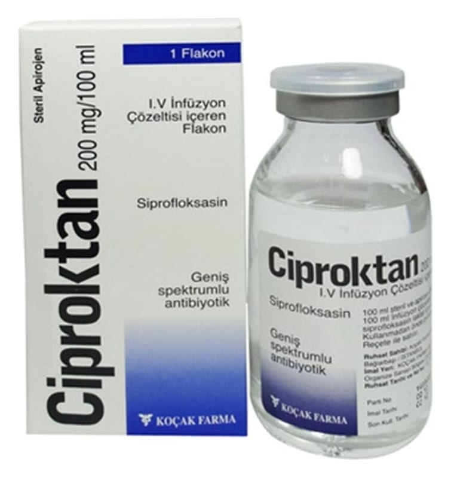

Ciproktan 400 mg/200 ml I.V. İnfüzyon İçin Çözelti İçeren Flakon

Ne için kullanılır
KT · Bölüm 1 CİPROKTAN şişe içerisinde piyasaya sunulmaktadır. Her bir şişe 400 mg siprofloksasine eşdeğer 534,18 mg siprofloksasin laktat monohidrat içerir.
CİPROKTAN’ın etkin maddesi olan siprofloksasin, florokinolon grubu bir antibiyotiktir. Antibiyotikler enfeksiyona neden olan bakterileri öldürmek için kullanılır.
CİPROKTAN, içerisinde 250 mililitrelik şişelerde bulunur. Şişe içerisindeki çözelti, renksiz berrak çözeltidir.
Bakterilerin neden olduğu yüz kemiklerinin içindeki hava boşluklarının akut iltihabı (akut bakteriyel sinüzit) ve komplike olmayan idrar yolu enfeksiyonlarında alternatif tedavi seçeneklerinin varlığında ciddi yan etki riski nedeniyle kullanılmamalıdır. Buna ilave olarak idrar yolu enfeksiyonlarında antibiyogramla duyarlılık kanıtlanması gerekmektedir.
CİPROKTAN, yetişkinlerde akciğer ve bronş enfeksiyonlarında, orta kulak iltihabı, sinüzitte, göz enfeksiyonlarında, böbrek ve idrar yolu enfeksiyonlarında, genital organların enfeksiyonlarında, mide-bağırsak sistemi ve karın içi enfeksiyonlarda, cilt ve yumuşak doku enfeksiyonlarında, kemik ve eklem enfeksiyonlarında, kanda meydana gelen enfeksiyonlarda, bağışıklık sistemi zayıflamış hastaların enfeksiyonlarında ya da enfeksiyon riskinin yüksek olduğu durumlarda, bağışıklık sistemi baskılanmış hastaların bağırsak enfeksiyonlarında kullanılır. CİPROKTAN, 1-17 yaş arası çocuklarda komplike idrar yolu enfeksiyonları ve böbrek enfeksiyonlarının 2. ve 3. basamak tedavisinde, kistik fibrozisin P.aeruginosa adlı bakteriye bağlı akciğer alevlenmesinde kullanılır.
Yetişkinlerde ve çocuklarda, solunum yoluyla geçen şarbon hastalığının ortaya çıkışını azaltmak ve ilerlemesini yavaşlatmak için de kullanılır.